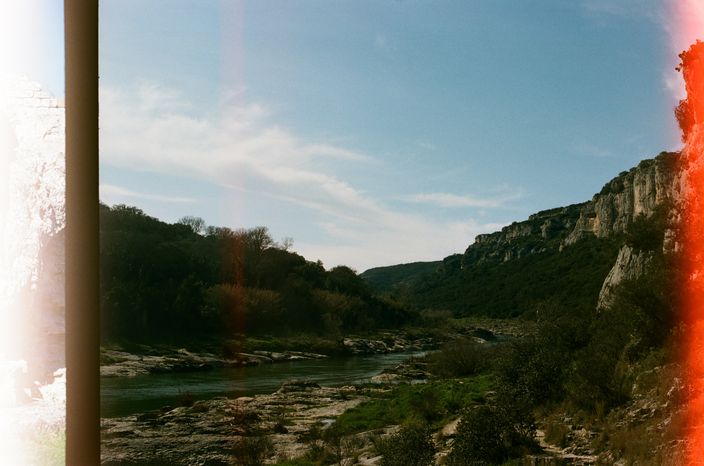

J'ai voulu créer la carte interactive la plus exhaustive des fromages de France — pour découvrir chaque fromage, trouver les producteurs, et créer ses propres itinéraires fromagers pour aller les goûter. En voiture, à vélo ou à pied !
Tout est parti d'une envie simple : découvrir les fromages de France où que je sois. Et d'une fascination : comment avec trois laits — vache, chèvre, brebis — arrive-t-on à une telle myriade de fromages ? Derrière chaque fromage, il y a aussi un savoir-faire ancestral perpétué par des gens passionnés.
Chaque fiche fromage indique son type de pâte, son affinage, sa saison idéale, son goût, son histoire — origine monastique, ou commune éponyme quand elle existe. Il y a aussi des détails sur les labels AOP, AOC, IGP. On peut localiser les producteurs sur la carte et créer ses itinéraires fromagers exportables.
La base ne sera probablement jamais complète. Un fromage qui manque ? Un producteur à ajouter ? N'hésitez pas à le suggérer !
I wanted to build the most exhaustive interactive map of French cheeses — to discover every cheese, find the producers, and design your own cheese itineraries to go and taste them. By car, by bike, or on foot!
It all started from a simple desire: to discover the cheeses of France wherever I am. And a fascination: how, with three milks — cow, goat, sheep — do we get such a myriad of cheeses? Behind each cheese is also an ancestral know-how perpetuated by passionate people.
Each cheese page indicates its paste type, aging, ideal season, taste, history — monastic origin, or eponymous commune when one exists. There are also details on AOP, AOC, IGP labels. You can locate producers on the map and create your own exportable cheese itineraries.
The database will probably never be complete. A cheese that's missing? A producer to add? Feel free to suggest it!